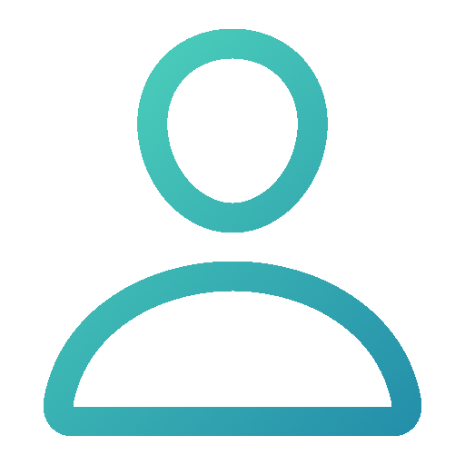
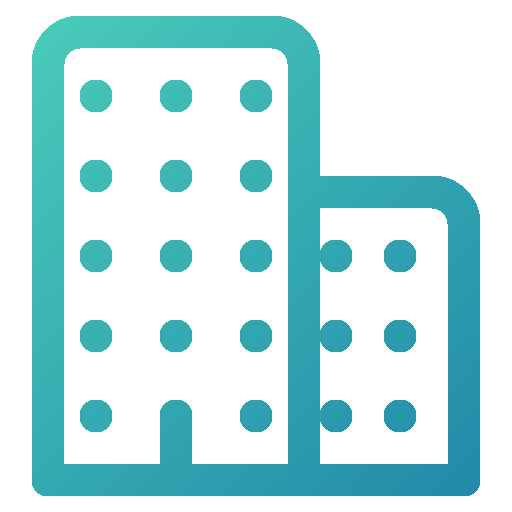

<ion-app>
  <ion-split-pane when="(min-width: 2040px)" contentId="main-content">
    <ion-menu contentId="main-content">
      <ion-header>
        <ion-toolbar color="custom">
          <ion-title>Menu</ion-title>
        </ion-toolbar>
      </ion-header>

      <ion-content>
        <ion-list>
          <div class="center-class">
            <ion-avatar *ngIf="userType === '1'" class="avatar-center">
              
            </ion-avatar>
            <ion-avatar *ngIf="userType === '2'" class="avatar-center">
              
            </ion-avatar>
            <ion-label> <h1>{{ userName }}</h1> </ion-label>
          </div>

          <ion-menu-toggle auto-hide="false" *ngFor="let p of appPages; let i = index">
            <ion-item routerDirection="root" [routerLink]="[p.url]" lines="none" detail="false" routerLinkActive="selected">
              <ion-icon slot="start" [ios]="p.icon + '-outline'" [md]="p.icon + '-sharp'"></ion-icon>
              <ion-label> {{ p.title }} </ion-label>
            </ion-item>
          </ion-menu-toggle>
        </ion-list>
      </ion-content>

      <ion-footer>
        <ion-item>
          <ion-icon slot="start" color="upmeup" name="power"></ion-icon>
          <button (click)="logOut()" class="logOutbtn"> <h6>Desconectar</h6> </button> 
        </ion-item>
      </ion-footer>
      
    </ion-menu>
    
    <ion-router-outlet id="main-content"></ion-router-outlet>

  </ion-split-pane>
</ion-app>